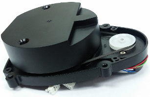
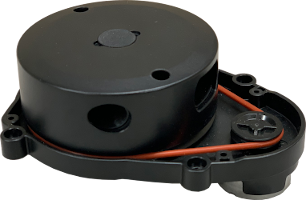
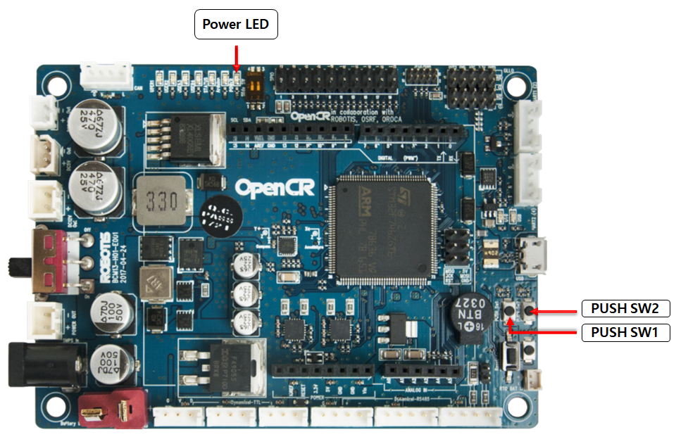
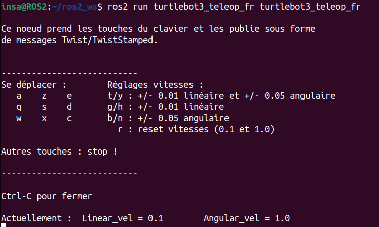
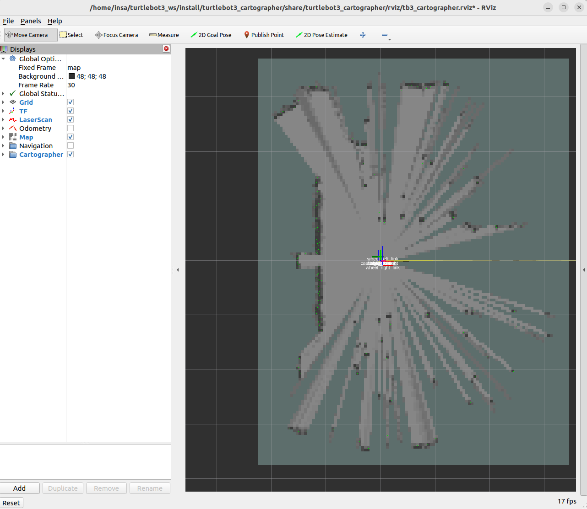
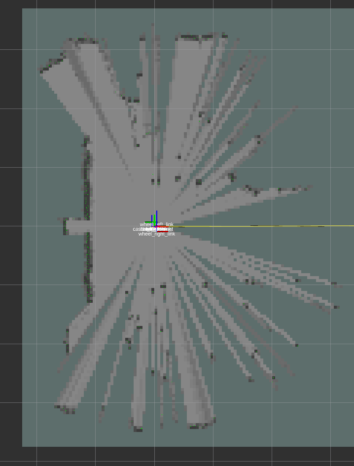
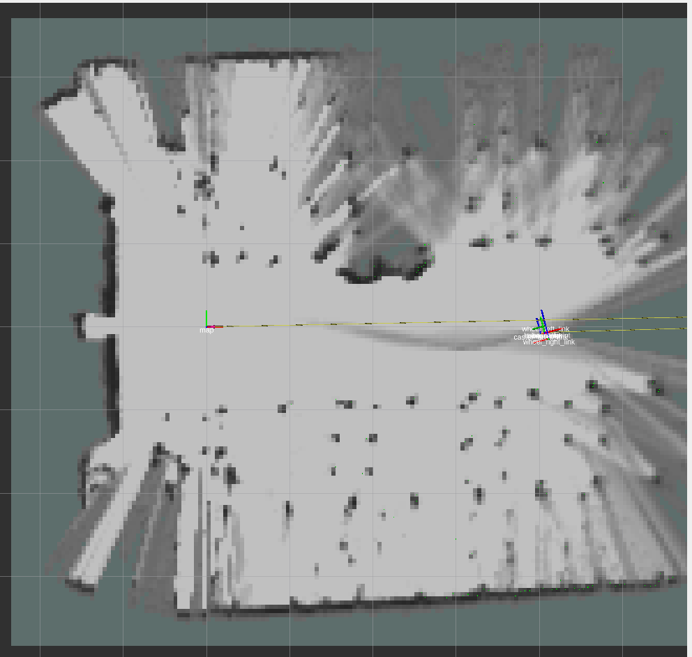
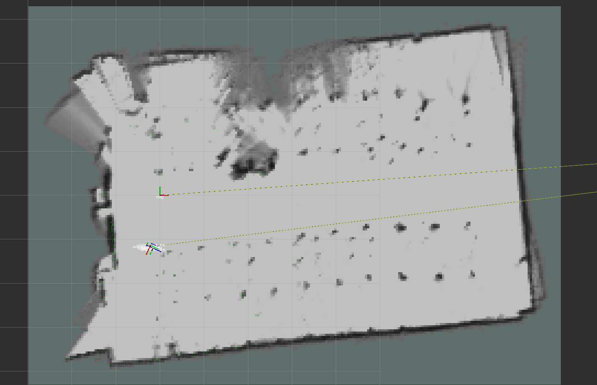

Tutoriel : TurtleBot3
Table des matières
Introduction
Bienvenue dans ce guide pratique dédié à l'exploration passionnante de la robotique avec le TurtleBot3 et ROS2. Au cours de ce tutoriel, nous plongerons dans les étapes cruciales de configuration, depuis l'installation de l'OS Ubuntu 22.04 sur la carte Raspberry Pi jusqu'à la mise en place du code spécifique sur la carte OpenCR du TurtleBot3. Une fois la configuration accomplie, nous passerons à l'étape cruciale : tester en temps réel le fonctionnement de votre TurtleBot3 dans un environnement ROS2 dynamique. Puis pour finir, nous utiliserons un ordinateur (dit de contrôle) pour commander le TurtleBot3 et faire le mapping d'une pièce.
TurtleBot3: Le TurtleBot3 est un robot mobile polyvalent conçu pour l'apprentissage, l'enseignement et la recherche en robotique. Créé par ROBOTIS, il est compact, abordable et équipé de capteurs essentiels tels que des caméras et des capteurs de distance. Son châssis modulaire permet une personnalisation facile, et il est largement utilisé dans le cadre de projets éducatifs et de développement robotique en raison de sa facilité d'utilisation et de son intégration avec le middleware Robot Operating System (ROS).
Communication Raspberry Pi <-> OpenCR: ROS (ROS1) utilise le package rosserial pour créer la communication entre la Raspberry Pi et l'OpenCR d'un TurtleBot3. Dans ROS2, l'architecture de communication a été modifiée et de ce fait la communication entre la Raspberry Pi et l'OpenCR se fait avec Micro-ROS.
Préparer la Raspberry Pi du TurtleBot3
Télécharger Raspberry Pi Imager
-
Vous pouvez télécharger, sur votre ordinateur, Raspberry Pi Imager directement depuis le site officiel de Raspberry Pi.
-
Choisissez l'installation pour l'OS de votre ordinateur:

Flasher l'OS sur la carte SD
Ouvrez Raspberry Pi Imager
-
Nous allons donc maintenant choisir l'OS que nous souhaitons mettre dans la Raspberry Pi.
Cliquez sur le bouton "Choisir l'OS" > "Other general-purpose OS" > "Ubuntu" > "Ubuntu Server 22.04.03 LTS (64-bits)".
On utilisera une Raspberry Pi 4 car les 1Gb de RAM de la Rapsberry Pi 3 ne suffisent pas ! (Nous avions eu ce soucis et nous sommes passés sur une RPi4!)Il est possible par la suite d'upgrade Ubuntu Server vers un Ubuntu Desktop.
Choisissez le stockage en sélectionnant la carte SD (la carte SD doit être formatée au format FAT32).
-
Cliquez sur la "roue dentée" pour ouvrir les paramètres.
Cochez et modifiez le "Nom d'hôte" pour avoir "ubuntu.local".
Cochez la case "Activer SSH" et sélectionnez "Utiliser un mot de passe pour l'authentification".
-
Cochez la case "Définir nom d'utilisateur et mot de passe" comme suit :
Nom d'utilisateur : ubuntu
Mot de passe : turtlebot
Cochez la case "Configurer le Wi-Fi". Choisissez votre wifi (Ne pas cocher "SSID caché").
Modifiez le fuseau horaire et le type de clavier pour avoir respectivement "Europe/Paris" et "fr".
Enregistrez les paramètres.
-
Cliquez maintenant sur le bouton rouge "Ecrire" pour que l'application créée sur la carte SD l'OS avec les différents paramètres. Cette étape est relativement longue car l'application doit écrire sur la carte SD puis il y a une étape de vérification de l'écriture.
Si un problème arrive comme par exemple un problème lors de la vérification, recommencez la procédure d'écriture de l'OS.
Paramétrer la Raspberry Pi
-
Vérifiez que vous êtes bien connecté à votre wifi. Pour ce faire ouvrez le fichier
/etc/netplan/50-cloud-init.yamlavec la commande suivante :sudo nano /etc/netplan/50-cloud-init.yaml
Vérifiez que dans ce fichier le nom et le mot de passe de votre wifi sont juste :

/!\ Le SSID_WIFI doit être entre guillemets. Vous devriez donc remplacer SSID_WIFI par le nom de votre wifi dans "SSID_WIFI" et WIFI_PASSWORD par le mot de passe de votre wifi comme sur la capture d'écran !
Sauvegardez le fichier et quittez.
Dans le cas où votre user (ici ubuntu) n'est pas dans les utilisateurs administrateurs, il faut passer en mode root et il faudra ensuite l'ajouter dans la liste des utilisateurs administrateurs :
sudo -i
adduser ubuntu sudo exit
Faites un redémarrage de votre machine virtuelle pour qu'elle prenne en compte le changement d'utilisateur.
Si le wifi ne se connecte pas, reprenez l'étape ci-dessus!
-
Tapez la commande suivante pour ouvrir un fichier de paramètres :
sudo nano /etc/apt/apt.conf.d/20auto-upgrades
Le fichier va s'ouvrir et modifiez le code pour modifier les paramètres suivants :
APT::Periodic::Update-Package-Lists "0"; APT::Periodic::Unattended-Upgrade "0";
-
Paramétrez le processus systemd pour éviter tout retard au démarrage, même s'il n'y a pas de réseau au moment de la mise en route. Exécutez la commande ci-dessous pour masquer le processus systemd à l'aide de la commande suivante :
systemctl mask systemd-networkd-wait-online.service
-
Désactivez la mise en veille et l'hibernation :
sudo systemctl mask sleep.target suspend.target hibernate.target hybrid-sleep.target
-
Redémarrez la Raspberry Pi :
reboot
-
Tapez la commande suivante pour installer le package de la commande ifconfig (permet de voir l'adresse IP et l'adresse MAC de la Raspberry Pi) :
sudo apt install net-tools
Utilisez alors la commande suivante pour voir l'adresse IP et MAC de votre RPi:
ifconfig
-
Si vous souhaitez travailler à partir du PC distant en utilisant une communication SSH, utilisez la commande ci-dessous à partir du terminal du PC distant. Assurez-vous d'utiliser ensuite le mot de passe que vous avez défini dans ce tutoriel :
ssh ubuntu@{IP Address of Raspberry PI}
Installer ROS2 Humble sur la Raspberry Pi
Votre OS Ubuntu 22.04 Server est maintenant installé correctement. Nous devons à présent y installer ROS2.
Configurer le système pour l'installation de ROS2
-
Définir les paramètres linguistiques :
locale # check for UTF-8 sudo apt update && sudo apt install locales sudo locale-gen en_US en_US.UTF-8 sudo update-locale LC_ALL=en_US.UTF-8 LANG=en_US.UTF-8 export LANG=en_US.UTF-8 locale # verify settings -
Rendre actif les répertoires requis :
sudo apt install software-properties-common sudo add-apt-repository universe
sudo apt update && sudo apt install curl -y sudo curl -sSL https://raw.githubusercontent.com/ros/rosdistro/master/ros.key -o /usr/share/keyrings/ros-archive-keyring.gpg
echo "deb [arch=$(dpkg --print-architecture) signed-by=/usr/share/keyrings/ros-archive-keyring.gpg] http://packages.ros.org/ros2/ubuntu $(. /etc/os-release && echo $UBUNTU_CODENAME) main" | sudo tee /etc/apt/sources.list.d/ros2.list > /dev/null
Installations d'outils de développement (optionnel) :
sudo apt update sudo apt install ros-dev-tools
Installer ROS2
-
Mise à jour système :
sudo apt update sudo apt upgrade
-
Installation de ROS2 sans desktop (Cette opération peut durer plusieurs minutes) :
sudo apt install ros-humble-ros-base
Cette version de ROS2 est une version qui n'a pas d'interface graphique. Ce qui n'est pas nécessaire sur la RPi du Turtlebot car lorsqu'il roulera on ne pourra pas avoir d'écran branché sur lui.
Si vous souhaitez avoir une interface graphique sur la Raspberry Pi, il vous faut upgrader votre Ubuntu Server 22.04 vers un Ubuntu Desktop 22.04 (Cette étape est assez longue 10-15min) :
sudo apt-get install ubuntu-desktop
Ensuite, vous devrez installer la version de ROS2 avec des interfaces graphiques :
sudo apt install ros-humble-desktop
-
Mettez à jour la source de ROS2 (d'avantage d'explications dans le "Tutoriel Installation ROS2") :
echo 'source /opt/ros/humble/setup.bash' >> ~/.bashrc source ~/.bashrc
Installer les packages pour le TurtleBot3
Installer et contruire les packages pour le TurtleBot3 dans un workspace
-
Tapez les commandes suivantes pour installer les packages :
sudo apt install python3-argcomplete python3-colcon-common-extensions libboost-system-dev build-essential sudo apt install ros-humble-hls-lfcd-lds-driver sudo apt install ros-humble-turtlebot3-msgs sudo apt install ros-humble-dynamixel-sdk sudo apt install libudev-dev
-
Créer un workspace pour le turtlebot3 :
mkdir -p ~/turtlebot3_ws/src && cd ~/turtlebot3_ws/src git clone -b humble-devel https://github.com/ROBOTIS-GIT/turtlebot3.git git clone -b ros2-devel https://github.com/ROBOTIS-GIT/ld08_driver.git cd ~/turtlebot3_ws/src/turtlebot3 rm -r turtlebot3_cartographer turtlebot3_navigation2 cd ~/turtlebot3_ws/
La commande git clone permet ici de cloner l'ensemble des fichiers des github de ROBOTIS pour le TurtleBot3 et pour les drivers.
La commande rm -r permet d'effacer (remove) des fichiers ou même d'effacer un répertoire. Comme le TurtleBot3 ne pourra pas afficher d'interface graphique lorsqu'il roulera, il n'est pas nécessaire de garder les packages permettant de visualiser le mapping qu'il est en train de réaliser avec son LIDAR (les packages : turtlebot3_cartographer et turtlebot3_navigation2). On utilisera ces packages uniquement depuis l'ordinateur qui contrôlera à distance le TurtleBot3. Nous n'avons donc pas besoin de les garder sur le TurtleBot3.
-
Construire le workspace du turtlebot3 (Cette opération peut durer plusieurs minutes):
colcon build --symlink-install --parallel-workers 1
Le paramètre
--parallel-workers 1signifie au constructeur des packages de ne construire qu'un seul fichier après l'autre. Sans ce paramètre dans la commande, le constructeur commencerait à construire tous les packages en parallèle. -
Mettre la source du workspace du turtlebot dans le fichier .bashrc et actualiser la source du fichier .bashrc (ici, nous devons ajouter l'overlay au fichier bashrc pour pouvoir utiliser ces packages que nous avons nous-mêmes build) :
echo 'source ~/turtlebot3_ws/install/setup.bash' >> ~/.bashrc source ~/.bashrc
Configurer les paramètres du port USB de l'OpenCR
Tapez les commandes suivantes :
sudo cp `ros2 pkg prefix turtlebot3_bringup`/share/turtlebot3_bringup/script/99-turtlebot3-cdc.rules /etc/udev/rules.d/ sudo udevadm control --reload-rules sudo udevadm trigger
Configurer le ROS_DOMAIN_ID du TurtleBot 3
Tapez les commandes suivantes :
echo 'export ROS_DOMAIN_ID=30 #TURTLEBOT3' >> ~/.bashrc source ~/.bashrc
Configurer les paramètres du LIDAR
Le Lidar du TurtleBot3 a été mis à jour vers le LDS-02 depuis 2022. Si vous possédez unTurtleBot3 après 2022, veuillez utiliser LDS-02 pour le
LDS_MODEL. Voici les deux modèles de Lidar :-
Modèle LDS-01 :
 -
Modèle LDS-02 :

Selon le modèle de votre LDS, utilisez LDS-01 ou LDS-02. Dans notre cas nous avons un Lidar LDS-01. Tapez les commandes suivantes :
echo 'export LDS_MODEL=LDS-01' >> ~/.bashrc source ~/.bashrc
sudo apt-get install ros-humble-cartographer-ros
Préparer la carte OpenCR du TurtleBot3
Setup de la carte OpenCR en cmd lines directement sur la Raspberry
Setup
Connectez l'OpenCR au Rasbperry Pi à l'aide du câble micro USB.
-
Installez les packages nécessaires sur le Raspberry Pi pour télécharger le firmware OpenCR avec les commandes :
cd ~/ sudo dpkg --add-architecture armhf sudo apt update sudo apt install libc6:armhf
-
Utilisez soit burger soit waffle pour le nom OPENCR_MODEL, selon le modèle de votre TurtleBot3 :
export OPENCR_PORT=/dev/ttyACM0 export OPENCR_MODEL=burger rm -rf ./opencr_update.tar.bz2
-
Téléchargez le firmware et le loader, puis vous devez extraire le fichier :
wget https://github.com/ROBOTIS-GIT/OpenCR-Binaries/raw/master/turtlebot3/ROS2/latest/opencr_update.tar.bz2 tar -xvf ./opencr_update.tar.bz2
-
Téléversez le firmware sur l'OpenCR :
cd ~/opencr_update ./update.sh $OPENCR_PORT $OPENCR_MODEL.opencr
-
Un téléversement réussi du firmware pour TurtleBot3 Burger ressemblera à ce qui suit :

-
Si le téléversement du firmware échoue, essayez de le téléverser avec le mode de dépannage. La séquence ci-dessous active le mode de dépannage de l'OpenCR. En mode de dépannage, le voyant STATUS de l'OpenCR clignotera périodiquement.
Suivez les étapes suivantes :
Maintenez le bouton PUSH SW2 enfoncé.
Appuyez sur le bouton Reset.
Relâchez le bouton Reset.
Relâchez le bouton PUSH SW2.

Test
Vous pouvez utiliser les boutons PUSH SW 1 et PUSH SW 2 pour vérifier si votre robot a été correctement assemblé. Ce processus permet de tester les DYNAMIXEL gauche et droit ainsi que la carte OpenCR.
-
Après avoir assemblé le TurtleBot3, connectez l'alimentation à l'OpenCR et allumez l'interrupteur d'alimentation de l'OpenCR. La LED rouge d'alimentation devrait s'allumer.
-
Placez le robot sur un sol plat dans une zone largement ouverte. Pour le test, un rayon de sécurité de 1 mètre (40 pouces) est recommandé.
-
Appuyez sur PUSH SW 1 pendant quelques secondes pour ordonner au robot d'avancer de 30 centimètres (environ 12 pouces).
-
Appuyez sur PUSH SW 2 pendant quelques secondes pour commander au robot une rotation de 180 degrés sur place.
Setup de la carte OpenCR via l'IDE Arduino d'un PC
Setup
Veuillez noter que le gestionnaire de carte OpenCR ne supporte pas l'IDE Arduino sur les SBC basés sur ARM tels que Raspberry Pi ou NVidia Jetson. Afin de télécharger le firmware OpenCR à l'aide d'Arduino IDE, veuillez suivre les instructions ci-dessous sur votre PC.
-
Installer l'IDE Arduino sur votre PC personnel : Download the latest Arduino IDE
-
Une fois l'installation terminée, lancez l'IDE Arduino.
-
Ouvrez le menu Préférences (Fichier > Préférences). Saisir l'adresse ci-dessous dans la section URL du gestionnaire de cartes additionnelles :
https://raw.githubusercontent.com/ROBOTIS-GIT/OpenCR/master/arduino/opencr_release/package_opencr_index.json

-
Ouvrez le firmware TurtleBot3. En fonction de votre type de TurtleBot3, sélectionnez le bon firmware. Pour ce faire allez dans :
-
Burger : Fichier > Exemples > TurtleBot3 > turtlebot3_burger > turtlebot3_core

-
Waffle/Waffle Pi : Fichier > Exemples > TurtleBot3 > turtlebot3_waffle > turtlebot3_core

-
-
Connectez l'OpenCR au PC avec un câble micro-USB (côté OpenCR) <-> USB (côté PC) et sélectionnez la carte OpenCR.
-
Téléversez le code du firmware TurtleBot3 en cliquant sur le bouton téléversement.
-
Vous devriez obtenir un message dans la console de l'IDE Arduino pour vous dire que le firmware a bien été téléversé !
Si le téléversement du firmware échoue, essayez de le téléverser avec le mode de récupération. La séquence ci-dessous active le mode de dépannage de l'OpenCR. En mode de dépannage, le voyant STATUS de l'OpenCR clignote périodiquement :
Maintenez le bouton PUSH SW2 enfoncé.
Appuyez sur le bouton Reset.
Relâchez le bouton Reset.
Relâchez le bouton PUSH SW2.
Test
Vous pouvez utiliser les boutons PUSH SW 1 et PUSH SW 2 pour vérifier si votre robot a été correctement assemblé. Ce processus permet de tester les DYNAMIXEL gauche et droit ainsi que la carte OpenCR.
-
Après avoir assemblé le TurtleBot3, connectez l'alimentation à l'OpenCR et allumez l'interrupteur d'alimentation de l'OpenCR. La LED rouge d'alimentation devrait s'allumer.
-
Placez le robot sur un sol plat dans une zone largement ouverte. Pour le test, un rayon de sécurité de 1 mètre (40 pouces) est recommandé.
-
Appuyez sur PUSH SW 1 pendant quelques secondes pour ordonner au robot d'avancer de 30 centimètres (environ 12 pouces).
-
Appuyez sur PUSH SW 2 pendant quelques secondes pour commander au robot une rotation de 180 degrés sur place.
Faire bouger le Turtlebot3
Dans cette partie, le Turtlebot sera sur batterie et ne sera donc pas relié à un écran. Pour ce faire, nous allons utiliser un ordinateur qui est connecté au même réseau wifi que le Turtlebot. Nous allons nous connecter en SSH à la Raspberry Pi du TurtleBot afin de pouvoir lancer les différentes commandes à distance.
-
Ouvrez un nouveau terminal sur votre PC personnel (qui est connecté sur le même wifi que le TurtleBot3).
-
Connectez-vous en SSH à la Raspberry Pi du TurtleBot3 avec la commande suivante :
ssh ubuntu@{IP_ADRESS_OF_RASPBERRY_PI}Exemple :
ssh ubuntu@10.173.20.207
Le mot de passe est ensuite demandé (Mot de passe : turtlebot).
Pour connaître l'adresse IP de la Raspberry :
- Utiliser la commande "ifconfig" sur la Raspberry Pi du TurtleBot3.
- Utiliser un scanner d'adresse IP depuis votre PC personnel. Ce scanner permettra de scanner et de trouver l'adresse IP de tous les appareils connectés à votre wifi. En déduire l'IP de la RPi.
Bringup du TurtleBot3
Le Bringup du TurtleBot3 consiste à lancer les packages de base pour démarrer les programmes TurtleBot3.
-
Indiquez à ce terminal le type de votre TurtleBot3. Choisissez le bon modèle parmi : burger, waffle et waffle_pi. Tapez alors la commande suivante en modifiant en fonction de votre modèle :
export TURTLEBOT3_MODEL=burger
-
Lancez alors le bringup du TurtleBot3 en arrière-plan avec la commande :
ros2 launch turtlebot3_bringup robot.launch.py &
Votre terminal devrait ressembler à l'image ci-dessous avec comme dernier message Run! :

Appuyez sur la touche "Entrer". Vous pourrez alors renvoyer des commandes dans ce terminal !
Vérifier la liste des topics actifs
Vous pouvez vérifier que le bringup du TurtleBot3 à bien été lancé correctement en affichant la liste des topics actifs sur le ROS_DOMAIN_ID=30 (correspondant au sous réseau sur lequel le TurtleBot3 est connecté).
-
Tapez la commande suivante toujours dans ce terminal en SSH sur la Raspberry Pi du TurtleBot :
ros2 topic list
-
Vous devriez obtenir la liste des topics actifs suivante :
Faire bouger le TurtleBot3 en publiant directement un message sur le topic /cmd_vel
-
Suivez les instructions suivantes en étant toujours dans le terminal en SSH avec la Raspberry Pi du TurtleBot.
-
Tapez la commande permettant de publier un message sur le topic
/cmd_veldu TurtleBot3 (Rappel : les messages des topics/cmd_velsont du typegeometry_msgs/Twist) :ros2 topic pub /cmd_vel geometry_msgs/Twist "{linear: {x: 2.0, y: 0.0, z: 0.0}, angular: {x: 0.0, y: 0.0, z: 2.0}}" -
Votre TurtleBot3 devrait bouger. Pour l'arrêter, renvoyez un message avec toutes les composantes à 0.0 :
ros2 topic pub /cmd_vel geometry_msgs/Twist "{linear: {x: 0.0, y: 0.0, z: 0.0}, angular: {x: 0.0, y: 0.0, z: 0.0}}"
Faire bouger le TurtleBot3 avec la télécommande
-
Tapez la commande pour lancer la télécommande consacré au TurtleBot en étant toujours dans le terminal en SSH :
ros2 run turtlebot3_teleop teleop_keyboard
-
Vous pourrez alors contrôler le déplacement du TurtleBot grâce aux touches de votre PC personnel. Suivez les instructions affichées sur le terminal de la télécommande.

-
Problème, cette télécommande est à la base prévue pour les claviers Qwerty. Nous allons donc créer une télécommande pour clavier Azerty avec un package Python dans la sous-section Bonus : Créer votre propre télécommande en python pour le TurtleBot3.
-
Arrêtez la télécommande en faisant "
Ctrl+C". -
Arrêtez le bringup du TurtleBot3. Pour ce faire tapez la commande "
fg" pour pouvoir voir la commande qui à été placée en arrière plan et faites ensuite "Ctrl+C". -
Vérifiez l'arrêt du bringup du TurtleBot3 en vérifiant que les topics du TurtleBot3 ne sont plus accessibles/actifs (vérifiez avec la commande
$ ros2 topic list).ros2 topic list
Bonus : Créer votre propre télécommande en python pour le TurtleBot3
Créer le package de la télécommande
-
Rendez-vous dans le répertoire "
/src"" du workspace/ros2_ws:cd ~/ros2_ws/src
-
Utilisez la commande pour créer un nouveau package python. Vous nommerez le package turtlebot3\_teleop\_fr :
ros2 pkg create --build-type ament_python turtlebot3_teleop_fr
-
Rendez-vous dans le répertoire :
cd ~/ros2_ws/src/turtlebot3_teleop_fr/turtlebot3_teleop_fr
-
Créez un fichier "turtlebot3_teleop_fr.py"
sudo nano turtlebot3_teleop_fr.py
-
Ajoutez le code python de l'annexe 1 dans ce fichier. Ce code vient directement de ce github et nous l'avons modifié pour qu'il soit adapté à un clavier Azerty ! Sauvegardez le fichier et fermez le.
-
Rendez-vous dans le répertoire :
cd ~/ros2_ws/src/turtlebot3_teleop_fr
-
Ouvrez le fichier package.xml :
sudo nano package.xml
-
Modifiez ce fichier en reprenant le code python de l'annexe 2 dans ce fichier. Vous pourrez modifier sans problème les sections : description, maintainer et license. Les autres sections de ce fichier ne sont pas à modifier ! Sauvegardez le fichier et fermez le.
-
Ouvrez le fichier setup.py en étant dans le même répertoire que précédemment (
~/ros2_ws/turtlebot3_teleop_fr) :sudo nano setup.py
-
Modifiez ce fichier en reprenant le code python de l'annexe 3 dans ce fichier. Vous pourrez modifier sans problème les sections : maintainer_email, description et license. Les autres sections de ce fichier ne sont pas à modifier ! Sauvegardez le fichier et fermez le.
-
Ouvrez le fichier setup.cfg et vérifiez qu'il est identique à celui de l'annexe 4
sudo nano setup.cfg
Vérifier les dépendances nécessaire au package
-
Revenez à la racine de votre workspace :
cd ~/ros2_ws
-
Tapez la commande suivante. (Les prochaines commandes sont très longues et peuvent prendre jusqu'à 20 minutes au total) :
sudo rosdep init
Si un message d'erreur apparaît cela vient sûrement du fait que vous avez déjà utilisé au moins une fois cette commande. Passez aux commandes suivantes :
rosdep update
rosdep install -i --from-path src --rosdistro humble -y
Vous devriez obtenir un message "All required rosdeps installed successfully". Vous pouvez alors passer à la construction du package.
Build le package
-
cd ~/ros2_ws
-
Tapez la commande suivante pour build votre workspace en entier (les commandes pour build qu'un seul package sont dans le "Tutoriel ROS2 : Partie 2") :
colcon build
Si tous les packages ont bien été construit vous devriez pouvoir voir dans le terminal que le package turtlebot3_teleop_fr à bien été build !
Utiliser le package
-
Tapez la commande pour lancer le bringup du TurtleBot3 en étant toujours dans le terminal en SSH sur la Raspberry Pi du Turtlebot 3 :
ros2 launch turtlebot3_bringup robot.launch.py
-
Retournez à la racine de votre workspace :
cd ~/ros2_ws
-
Écrivez la source de votre workspace dans le terminal (Rappel : on a sourcé ROS2 dans le fichier .bashrc en tant qu'underlay et maintenant nous allons sourcé par-dessus votre workspace en tant qu'overlay pour avoir accès aux packages que vous avez crées dans votre workspace) :
source install/setup.bash
-
Ecrivez la commande pour lancer la télécommande de votre package Python:
ros2 run turtlebot3_teleop_fr turtlebot3_teleop_fr
Vous devriez obtenir la télécommande suivante :
Vous pouvez maintenant contrôler le TurtleBot3 à l'aide de la télécommande dans le premier terminal.
Utiliser le LIDAR du Turtlebot
Dans cette section nous ne pouvons pas utiliser une simple communication ssh avec le TurtleBot. Nous avons besoin d'un ordinateur linux Ubuntu 22.04 (ou une machine virtuelle) ayant ROS2 pour pouvoir utiliser une application de mapping SLAM (une application de mapping avec une interface graphique).
De plus cet ordinateur et le TurtleBot devrons être connectés à un même réseau wifi sans passerelles. (Par exemple, pour le moment, nous avons un problème de ports de communications sur la passerelle entre le réseau INSA-IoT (wifi) et le réseau filaire des ordinateurs des salles informatiques T.041 et L.112. De ce fait nous ne pouvons pas encore faire communiquer le Turtlebot (wifi: INSA-IoT) avec les ordinateurs des salles informatiques). C'est pour cela que dans la suite de ce tutoriel, il est demandé de se connecter à un réseau wifi simple comme par exemple le partage de connection d'un téléphone portable.
Installer les packages nécessaires pour le contrôle du TurtleBot3 et du LIDAR sur une machine virtuelle
Créez une machine virtuelle avec Ubuntu 22.04 (Suivez le tutoriel : Installation de ROS2 )
Lancez votre machine virtuelle Ubuntu 22.04 et installez ROS2 (Suivez le même tutoriel : Installation de ROS2)
-
Vérifiez que vous êtes bien connecté au même wifi avec cette VM et le TurtleBot3. Pour rappel, le wifi peut se changer dans le fichier
/etc/netplan/50-cloud-init.yaml:sudo nano /etc/netplan/50-cloud-init.yaml
Dans le cas où votre user n'est pas dans les utilisateurs administrateurs, il faut passer en mode root et il faudra ensuite l'ajouter dans la liste des utilisateurs administrateurs :
sudo -i adduser {user} sudo exit Ouvrez un terminal dans votre VM et mettez la source de ROS2 dans le fichier
.bashrc:Actualisez la source du fichier
.bashrc:Tapez les commandes suivantes pour installer les packages de simulation et de mapping pour ROS2 sur votre VM :
Tapez ensuite les commandes pour installer les packages TurtleBot3 sur la VM :
Ajoutez au fichier
.bashrc, de votre VM, leROS_DOMAIN_IDpour qu'il soit identique à celui du TurtleBot3 :
echo 'source /opt/ros/humble/setup.bash' >> ~/.bashrc
source ~/.bashrc
sudo apt-get update sudo apt-get upgrade sudo apt install ros-humble-gazebo-* sudo apt install ros-humble-cartographer ros-humble-cartographer-ros sudo apt install ros-humble-navigation2 ros-humble-nav2-bringup
sudo apt install ros-humble-dynamixel-sdk sudo apt install ros-humble-turtlebot3-msgs sudo apt install ros-humble-turtlebot3
echo 'export ROS_DOMAIN_ID=30 #TURTLEBOT3' >> ~/.bashrc source ~/.bashrc
Lancer le bringup du Turtlebot
-
Ouvrez un nouveau terminal dans la VM et suivez les commandes pour lancer le bringup du TurtleBot3 en ssh sur la Raspberry Pi du Turtlebot 3:
ssh ubuntu@{IP_ADRESS_OF_RASPBERRY_PI} -
Tapez le mot de passe puis entrez les commandes :
ros2 launch turtlebot3_bringup robot.launch.py
Lancez l'application SLAM
-
Ouvrez un nouveau terminal dans votre VM et lancez la commande suivante pour démarrer l'application SLAM :
ros2 launch turtlebot3_cartographer cartographer.launch.py
-
Le démarrage de l'application est assez long mais vous devriez obtenir ceci :
L'application SLAM fait appel à RVIZ pour pouvoir afficher ce type d'image. SLAM permet aussi de faire du mapping. Pour ce faire, nous devons utiliser une télécommande pour faire bouger le TurtleBot3.
Lancez la télécommande
-
Ouvrez un nouveau terminal et tapez les commandes suivantes pour lancer la télécommande de votre package Python :
cd ~/ros2_ws source install/setup.bash
ros2 run turtlebot3_teleop_fr turtlebot3_teleop_fr
-
Vous devriez obtenir la télécommande que vous avez construite en python précédemment :
Faites le mapping de votre pièce
Utilisez la télécommande pour faire bouger le TurtleBot3 et regardez l'évolution du mapping dans la fenêtre RVIZ.
Voici l'évolution du mapping :
-
Démarrage :
 -
En cours de route :
 -
A son arrivé :

Le tutoriel est fini ! Vous avez donc appris à configurer le TurtleBot3 (partie Raspberry Pi et partie OpenCR) puis à le faire fonctionner. Vous avez aussi appris a créez une télécommande pour le TurtleBot3 en Python et vous avez appris à faire du mapping avec ROS2 !
Annexes
Annexe 1 : Code python turtlebot3_teleop_fr du package "turtlebot3_teleop_fr"
Revenez au bon endroit dans le tuto !
# -*- coding: utf-8 -*- """ Created on Mon Nov 27 21:54:30 2023 @author: bouille arthur INSA Strasbourg GE5 """ import sys import threading import geometry_msgs.msg import rclpy if sys.platform == 'win32': import msvcrt else: import termios import tty msg1 = """ Ce noeud prend les touches du clavier et les publie sous forme de messages Twist/TwistStamped. """ msg = """ --------------------------- Se déplacer : Réglages vitesses : a z e t/y : +/- 0.01 linéaire et +/- 0.05 angulaire q s d g/h : +/- 0.01 linéaire w x c b/n : +/- 0.05 angulaire r : reset vitesses (0.1 et 1.0) Autres touches : stop ! --------------------------- Ctrl-C pour fermer """ moveBindings = { 'z': (1, 0, 0, 0), 'e': (1, 0, 0, -1), 'q': (0, 0, 0, 1), 'd': (0, 0, 0, -1), 'a': (1, 0, 0, 1), 'x': (-1, 0, 0, 0), 'w': (-1, 0, 0, -1), 'c': (-1, 0, 0, 1), } speedBindings = { 'r': (0.1, 1.0), # Reset vitesses 't': (0.01, 0.05), 'y': (-0.01, -0.05), 'g': (0.01, 0), 'h': (-0.01, 0), 'b': (0, 0.05), 'n': (0, -0.05), } def getKey(settings): if sys.platform == 'win32': # getwch() returns a string on Windows key = msvcrt.getwch() else: tty.setraw(sys.stdin.fileno()) # sys.stdin.read() returns a string on Linux key = sys.stdin.read(1) termios.tcsetattr(sys.stdin, termios.TCSADRAIN, settings) return key def saveTerminalSettings(): if sys.platform == 'win32': return None return termios.tcgetattr(sys.stdin) def restoreTerminalSettings(old_settings): if sys.platform == 'win32': return termios.tcsetattr(sys.stdin, termios.TCSADRAIN, old_settings) def vels(speed, turn): return 'Actuellement :\tLinear_vel = %s\tAngular_vel = %s ' % (speed, turn) def main(): settings = saveTerminalSettings() rclpy.init() node = rclpy.create_node('teleop_keyboard_fr') # parameters stamped = node.declare_parameter('stamped', False).value frame_id = node.declare_parameter('frame_id', '').value if not stamped and frame_id: raise Exception("'frame_id' can only be set when 'stamped' is True") if stamped: TwistMsg = geometry_msgs.msg.TwistStamped else: TwistMsg = geometry_msgs.msg.Twist pub = node.create_publisher(TwistMsg, 'cmd_vel', 10) spinner = threading.Thread(target=rclpy.spin, args=(node,)) spinner.start() speed = 0.1 turn = 1.0 x = 0.0 y = 0.0 z = 0.0 th = 0.0 status = 0.0 twist_msg = TwistMsg() if stamped: twist = twist_msg.twist twist_msg.header.stamp = node.get_clock().now().to_msg() twist_msg.header.frame_id = frame_id else: twist = twist_msg try: print(msg1) print(msg) print(vels(speed, turn)) while True: key = getKey(settings) if key in moveBindings.keys(): x = moveBindings[key][0] y = moveBindings[key][1] z = moveBindings[key][2] th = moveBindings[key][3] elif key in speedBindings.keys(): if key != 'r': # Si pas reset on modifie les valeurs de vitesses speed = round(speed + speedBindings[key][0],2) turn = round(turn + speedBindings[key][1],2) # Vérification par rapport au valeur de vitesse max pour le turtlebot burger # 0.22 en linéaire et 2.84 en angulaire if speed > 0.22: speed = 0.22 print("Vitesse linéaire 0.22 maximum !") elif speed < -0.22: speed = -0.22 print("Vitesse linéaire -0.22 minimum !") if turn > 2.84: turn = 2.84 print("Vitesse angulaire 2.84 maximum !") elif turn < -2.84: turn = -2.84 print("Vitesse angulaire -2.84 minimum !") else: # On reset les valeurs des vitesses si 'r' speed = 0.1 turn = 1.0 print(vels(speed, turn)) if (status == 14): print(msg) status = (status + 1) % 15 else: x = 0.0 y = 0.0 z = 0.0 th = 0.0 if (key == '\x03'): break if stamped: twist_msg.header.stamp = node.get_clock().now().to_msg() twist.linear.x = x * speed twist.linear.y = y * speed twist.linear.z = z * speed twist.angular.x = 0.0 twist.angular.y = 0.0 twist.angular.z = th * turn pub.publish(twist_msg) except Exception as e: print(e) finally: if stamped: twist_msg.header.stamp = node.get_clock().now().to_msg() twist.linear.x = 0.0 twist.linear.y = 0.0 twist.linear.z = 0.0 twist.angular.x = 0.0 twist.angular.y = 0.0 twist.angular.z = 0.0 pub.publish(twist_msg) rclpy.shutdown() spinner.join() restoreTerminalSettings(settings) if __name__ == '__main__': main()Annexe 2 : Code python package.xml du package "turtlebot3_teleop_fr"
Revenez au bon endroit dans le tuto !
<?xml version="1.0"?> <package format="3"> <name>turtlebot3_teleop_fr</name> <version>1.0.0</version> <description>Télécommande ROS2 pour TurtleBot3</description> <maintainer email="arthur.bouille@insa-strasbourg.fr">insa</maintainer> <license>TODO: License declaration</license> <exec_depend>geometry_msgs</exec_depend> <exec_depend>rclpy</exec_depend> <test_depend>ament_copyright</test_depend> <test_depend>ament_flake8</test_depend> <test_depend>ament_pep257</test_depend> <export> <build_type>ament_python</build_type> </export> </package>Annexe 3 : Code python setup.py du package "turtlebot3_teleop_fr"
Revenez au bon endroit dans le tuto !
from setuptools import find_packages, setup package_name = 'turtlebot3_teleop_fr' setup( name=package_name, version='1.0.0', packages=find_packages(exclude=['test']), data_files=[ ('share/ament_index/resource_index/packages', ['resource/' + package_name]), ('share/' + package_name, ['package.xml']), ], install_requires=['setuptools'], zip_safe=True, maintainer='insa', maintainer_email='arthur.bouille@insa-strasbourg.fr', description='Télécommande ROS2 pour TurtleBot3', license='TODO: License declaration', tests_require=['pytest'], entry_points={ 'console_scripts': [ 'turtlebot3_teleop_fr = turtlebot3_teleop_fr.turtlebot3_teleop_fr:main' ], }, )Annexe 4 : Code python setup.cfg du package "turtlebot3_teleop_fr"
Revenez au bon endroit dans le tuto !
[develop] script_dir=$base/lib/turtlebot3_teleop_fr [install] install_scripts=$base/lib/turtlebot3_teleop_fr